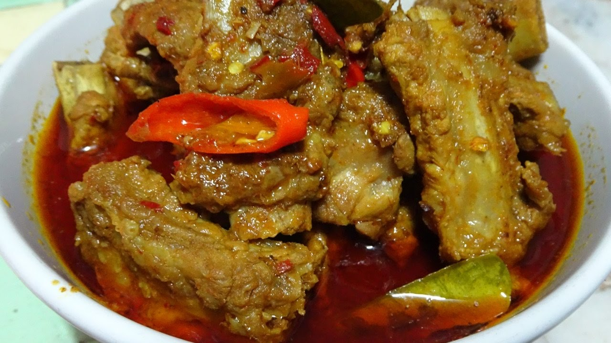

Dry Chili Pork Ribs Curry
Make this authentic Thai recipe for Thai dry chili pork ribs curry if you love authentic Thai food and massive flavor. This is a southern Thai curry that my mother in-law loves to make, and I can guarantee you, it will give you an overload of flavor.
Ingredients
For the curry
- 1 kg. pork ribs, or chicken or any meat of choice
- 6 - 8 tbsp. curry paste - ingredients below
- 10 kaffir lime leaves 2 - 4 cups of water- begin with 2 cups, and you can add more as needed
For the curry paste
- 50 grams Thai dry bird's eye chilies
- 7 cloves garlic
- 3 shallots
- 1 coriander root
- 2 thumbs sized chunks of turmeric
- 1 stalk lemongrass
- 1 thumb sized chunk of old galangal
- 1 tbsp. black peppercorns
- 1 tsp. cumin seeds
- 1 tsp. corinder seeds
- 1 tsp. salt
- 1.5 tbsp shrimp paste
Instructions
- The first step is to prepare your ingredients for the curry paste. Put the dry chilies into a bowl of water for about 5 minutes to rehydrate them. Peel the garlic and shallots, remove the outer skin of the turmeric, and peel off the very outer layer of the lemongrass. Slice the garlic, shallots, coriander root, turmeric, lemongrass, and galangal into smaller pieces to make them easier to pound.
- For the cumin seed and coriander seeds, toast them in a hot dry frying pan for 30 seconds until fragrant. Set all the curry paste ingredients aside.
- Using a stone mortar and pestle, add 1 tsp. of salt, then apart from the shrimp paste, pound all the curry paste ingredients together. Pound for about 1 hour to get a smooth paste consistency.
- When you think your curry paste in done, add the shrimp paste at the very end, and mix and mash for a minute until it's fully mixed in.
- In a medium pot, boil about 2 cups of water and dissolve in 6 tbsp. of the fresh curry paste (Note: you can start with less curry paste if you'd like, and add more if needed).
- Cut the pork ribs into bite sized pieces, and add them to the curry.
- Take 10 kaffir lime leaves, tear them lightly with your hand, and add them to the curry.
- Slow boil for about 1 hour until the meat is very tender, stirring occasionally. You may need to add more water if your curry starts to get dry. Keep boiling and adding water as needed. The important thing is that when you're done cooking the curry, the water should mostly be evaporated leaving you a nice thick curry sauce consistency (you don't want watery).
- Taste test and add salt as needed. You can also add more curry paste if you want to bump up the spice and flavor..
- Once the pork ribs are tender and you have a nice curry sauce, turn off the heat, and you're done.

All Rights Reserved